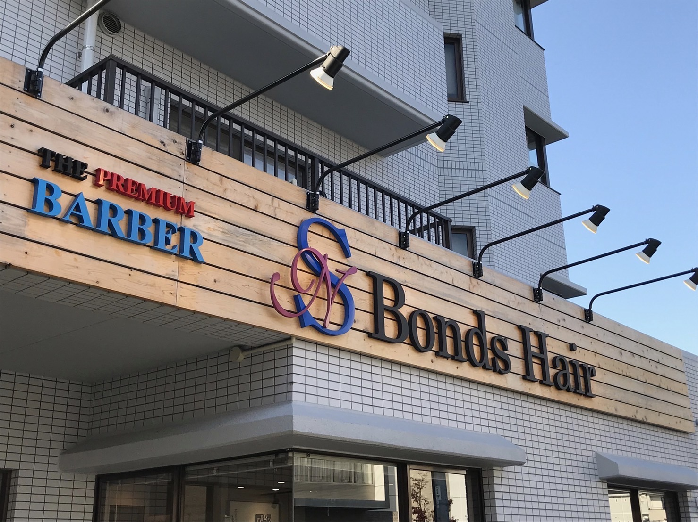

株式会社GROW

募集要項
- 勤務地：
- 〒731-0138
広島県広島市安佐南区祇園5丁目3-12
中本ビル1F - 勤務時間：
- 9時～19時
- 仕事内容：
- テキストテキスト
- 給与：
- 月給180,000円〜250,000円+歩合
- 応募資格：
- 学歴不問
- 休日：
- 毎週月曜日・第三日曜日・GW・お盆・年末年始
- 福利厚生：
-
保険制度(雇用保険、労災保険、厚生年金、健康保険)
交通費支給
研修あり
日曜休みあり（第三日曜日のみ）
資格取得支援制度あり
車・バイク通勤可
転勤なし
会社概要
- 会社名：
- 株式会社GROW
- 代表者：
- 山脇 伸介
- 設立：
- 2022年1月●日
- 所在地：
- 〒731-0138
広島県広島市安佐南区祇園5丁目3-12
中本ビル1F - 従業員数：
- 3人（アルバイト・パートを除く）
- T E L：
- 082-555-9580
応募フォーム
「話だけでも聞いてみたい」という方でもお気軽に応募してください。
後日折り返しご連絡いたします。